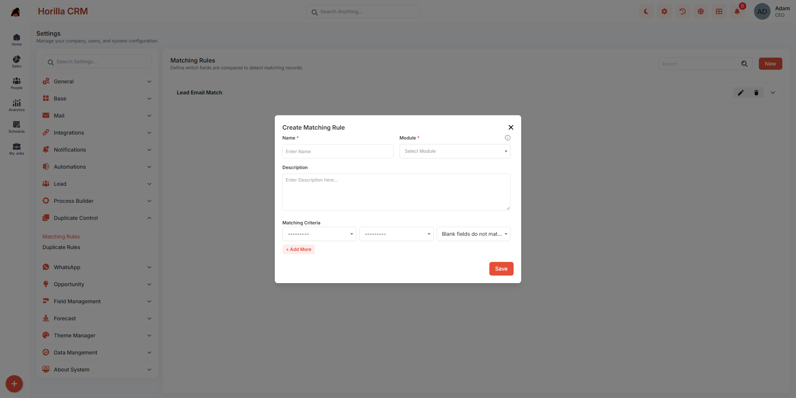

Matching Rules
Go to Settings → Duplicate Control → Matching Rules. The page title
is Matching Rules. The description is Define which fields are compared to
detect matching records.
Each rule is one row. Edit and Delete sit on the row, and the arrow expands it. The expanded row shows Module, Description when one is set, and Matching Criteria. What to do after a match is set on Duplicate Rules.
Create Matching Rule
Click New. The form title is Create Matching Rule. Save stores the rule. The form does not offer Save & New.

| Field | Description |
|---|---|
| Name | Name of the rule. Placeholder: Enter Name. |
| Module | Account, Contact or Lead. Placeholder: Select Module. |
| Description | Optional notes. Placeholder: Enter Description here... |
| Matching Criteria | At least one row. + Add More adds another. Each field can be used only once. |
Each criterion row has three lists:
- Field — the field to compare. The choices depend on the module.
- Matching Method — Exact or Fuzzy.
- Blank fields — Blank fields do not match or Blank fields match.
Several criteria on one rule are combined with AND, so every criterion has to match.